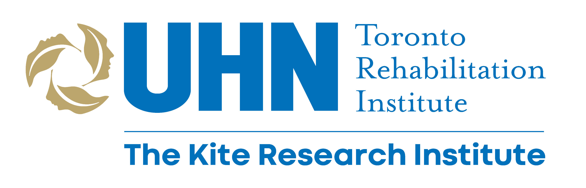

<div class="welcome" fxLayout='column' fxLayoutGap="10px" fxLayoutAlign='center center'>
    <div class="center">
        <section>
            <h1>EGO VISION</h1>
            <p>This is a clinical decision support tool currently being tested in a study at the University of Toronto and KITE Toronto Rehabilitaion Institute evaluating the usefulness of delivering patient-specific hand function metrics from egocentric video to outpatient care.</p>
            <p>We are currently recruiting patient-therapist dyads to participate in this study. Patient participants will record 1-hour sessions between 2-4 times per week for a minimum of 2 weeks between therapy sessions. Therapist participants will view metrics from at-home video recordings on CDSS and participate in structured and semi-structured interviews.</p>
            <p>This study has been reviewed and has been granted Institutional Authorization. This authorization is subject to UHN policy 40.20.008. If you are interested, please contact Adesh Kadambi (<a href="mailto:adesh.kadambi@mail.utoronto.ca">email</a>).</p>
            
        </section>
    </div>
</div>  